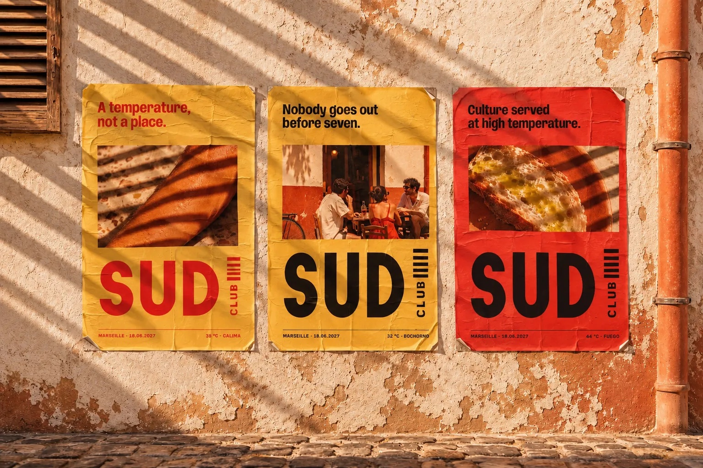
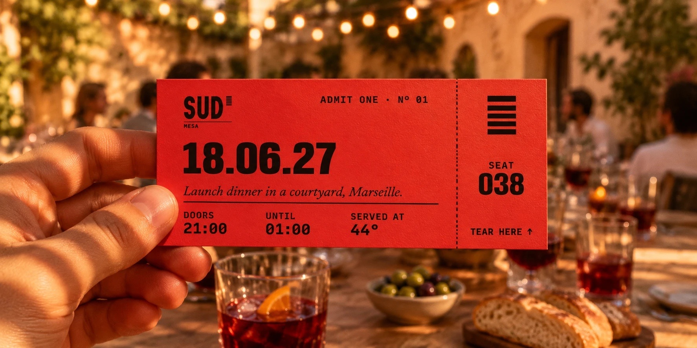
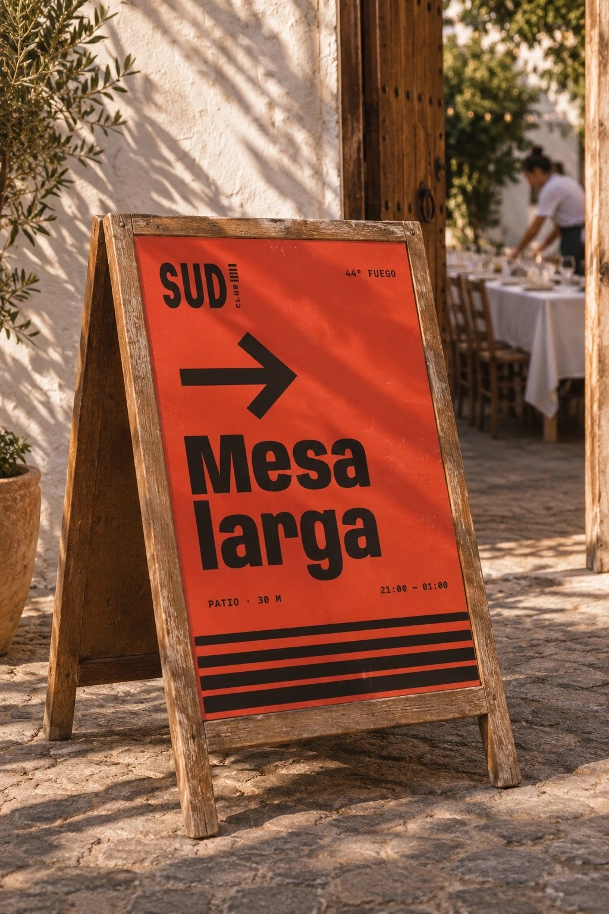

ProyectosSUD CLUB
Identidad visual · Proyecto personal
SUD CLUB
Hay sitios donde el calor lo cambia todo: las palabras se estiran, las cenas empiezan tarde y nunca terminan. SUD CLUB es un club cultural del Mediterráneo nacido de esa certeza: el sur no es un lugar, es una temperatura.
Contexto y objetivos
Contexto
Un club sin casa. Cada verano pone la mesa en una ciudad distinta y embotella lo que el sur produce. Una marca que se cuenta con el cuerpo, no con la postal.
El sur no es un lugar: es una temperatura.
Objetivos
Escapar de la postal: ni mar azul, ni olivos, ni lino blanco.
Una sola regla para todo: la temperatura.
Que cada pieza, del logo a la mesa, se sienta caliente.
Mi papel
- Dirección de arte
- Identidad visual
- Diseño y desarrollo web
Concepto, estrategia e identidad completa: logotipo, iconografía, cartelería, redes sociales, animación, una web que lee el tiempo real y la identidad de un evento.
Galería

Proceso creativo
Todo empieza en una escala de cinco temperaturas, de la sombra al fuego. Con el calor, las letras se ensanchan, se aprietan y se estiran, y el color pasa de la cal al tomate. El logo no tiene versiones: tiene estados.
El isotipo es una persiana. A las tres de la tarde, todo el sur la baja, y su sombra a rayas atraviesa cada foto, cada cartel y cada mesa.
La misma regla mueve todo el sistema: los carteles, las redes y la cena de lanzamiento cambian de color y de forma con el calor.
A temperature, not a place.
Gathers · bottles · Nomadic


Resultado final
Una identidad que cambia con el calor: el logo, los colores y la tipografía responden a la temperatura. El sistema tiene cinco estados, veintisiete iconos animados, carteles, redes, una web que lee el tiempo real de cada ciudad y una cena que sube de temperatura hora a hora.